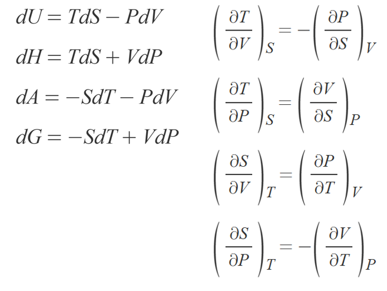
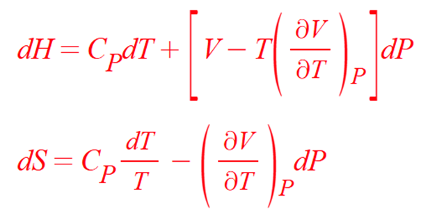
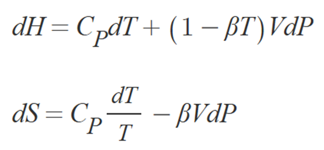
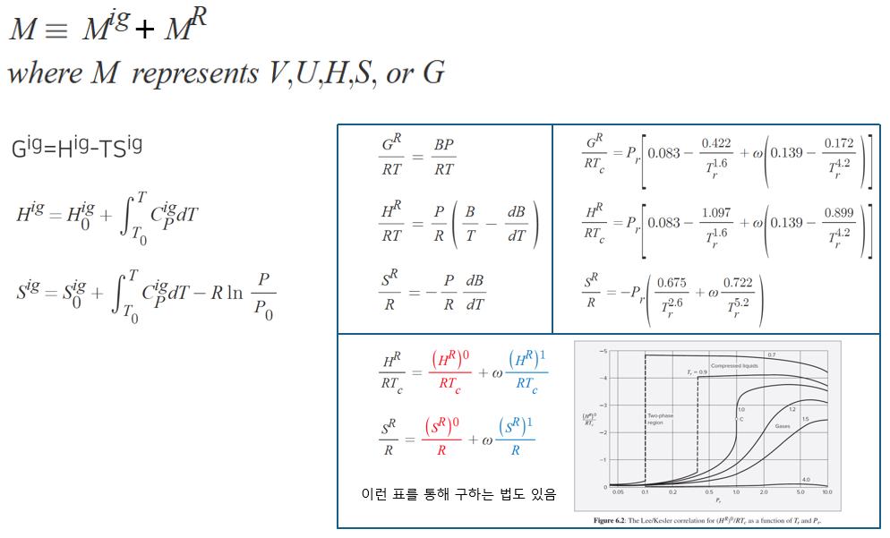
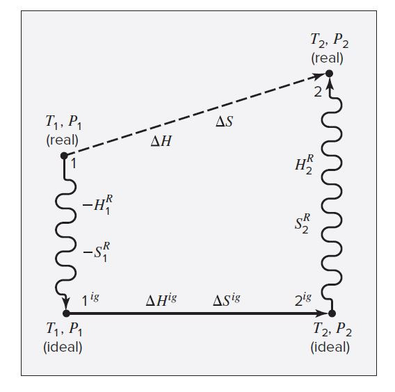
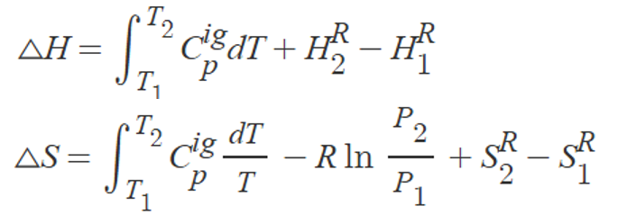
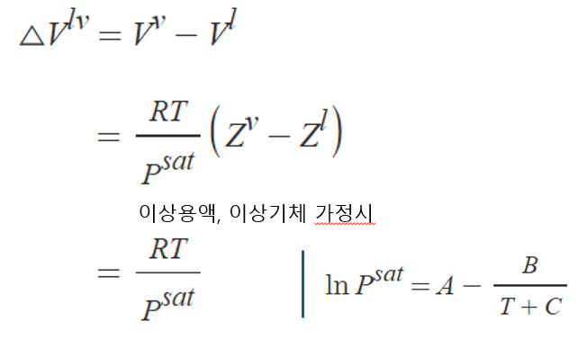

ch6: 유체의 열역학적 성질
1) 온도와 압력항으로 나타낸 엔탈피와 엔트로피
먼저 열역학적 함수 사이엔 다음과 같은 관계가 성립한다.

열역학 상태 함수 중 가장 쉽게 측정 가능한 것이 온도와 압력이므로, 먼저 엔탈피와 엔트로피가 온도와 압력으로 어떻게 나타나는지 알아보려고 한다.

유도는 생략하고 , 엔트로피와 엔탈피를 온도와 압력의 함수로 나타내면 위와 같다. 액체인 경우 다음 식이 성립한다.

2)잔류성질
이번에는 엔탈피, 엔트로피의 변화량 dH, dS가 아닌 실제 H, S 값 그 자체를 구하는 방법을 배운다. 마찬가지로 맨 앞에 제시된 열역학적 함수간의 관계를 통해 유도하는데, 유도과정은 매우 복잡하여 외울 수 없다. 유도된 결과만 보면 된다.
실제 물성은 이상기체일때의 물성+잔류 성질로 계산한다.

이렇게 두 성질을 계산하여 더해주기만 하면 실제 물성을 계산할 수 있다. 잔류성질은 옆에 박스친 3가지 방법 중에서 하나로 구한다. 왠만해서는 2번째 방법인 pr과 Tr을 이용한 방법으로 구한다.
이걸로 어떤 기체가 변화할때, 엔탈피와 엔트로피 차이를 구하는 방법을 알아보자.

Step ① 상태 1의 실제 기체 물성을 상태 1의 이상 기체 상태 물성으로 변환
Step ② 이상 기체의 상태 1에서 2로 가는 과정의 물성 차이 계산
Step ③ 상태 2의 이상 기체 상태 물성을 상태 2의 실제 기체 물성으로 변환
따라서 우리는 실제 기체가 거친 실제 과정에 대한 직접적인 계산이 아니라, 위와 같이 상태 1에서 2로 가는 과정은 이상 기체에게 맡기고, 처음과 나중 상태에서 실제 기체와 이상 기체 상태의 물성 차이를 더하고 빼줌으로써 동일한 계산 결과를 얻어낸다. 즉 이상 기체 상태는, 임의의 과정에 대한 물성 변화 계산의 기준을 제공한다는 점에서 반응열 계산의 표준 반응열과 동일한 역할을 한다고 보면 된다. 3장에서 왜 이상 기체에 대한 과정만 배웠는지 이제 이해가 될 것이다.

따라서 실제 기체가 특정 과정을 거칠때 엔탈피와 엔트로피는 위 로직으로 계산할 수 있다. 이때 잔류성질은 위에 표시된 방법으로 구한다.
3) 이상계

상변화시 부피 변화는 위 식으로 계산할 수 있다.